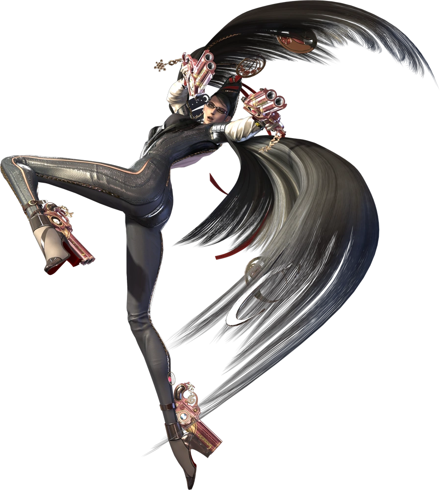

Bayonetta 1 follows Bayonetta on a journey to find her lost memories, as she as well as the audience wonders many questions about her like: Who is Bayonetta? What is her purpose in this world? What was her past? Why is she fighting Angels?
In this game the main enemy is the Angels, celestial beings that come from Paradiso, the realm of the Angels.
Bayonetta herself is an Umbran Witch, a powerful witch that has the ability to summon infernal Demons with her hair magic. Since she makes deals with Demons, she is the natural enemy to Angels.
In this game we are also introduced to Jeaunne, a fellow Umbran Witch who has a very special connection to Bayonetta and is a crucial component to finding the truth of Bayonetta’s past.
This game follows Bayonetta’s quest as she not only defeats many powerful Angels that try to send her to Inferno (Hell), but also learns more about herself and her place in the world.